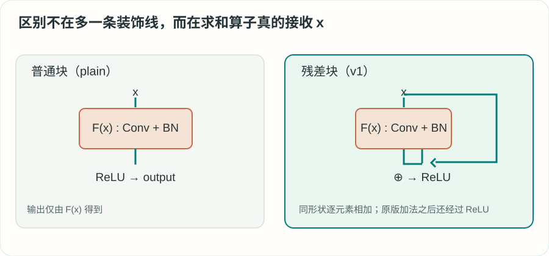
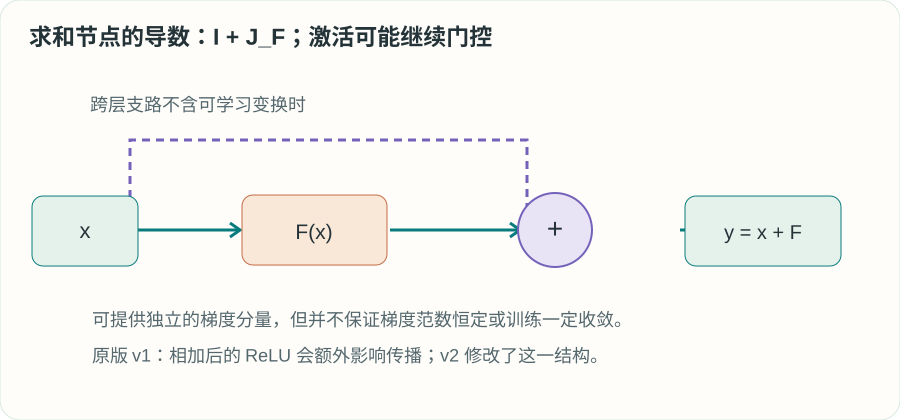
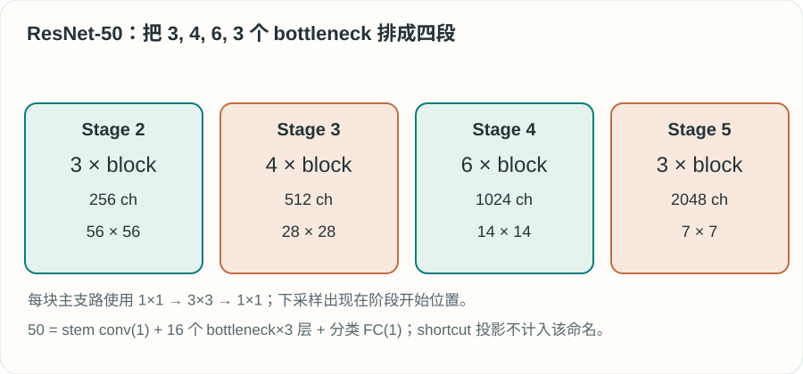
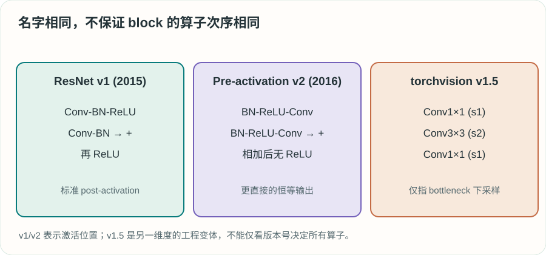

CHAPTER 10 · RESIDUAL LEARNING
ResNet：让深层网络真正容易训练
为什么加深网络会出现更高的训练误差？残差捷径如何改变函数参数化和梯度路径？从原论文数据、计算图到运行时张量形状逐一验证。
01 · 网络更深时训练误差为什么反而更高？
如果一个浅网络已经可以表示映射 H(x)，更深的网络似乎至少可以让新增层实现恒等映射，从而取得不差于原模型的训练损失。但在实际优化中，找到这种参数配置并不容易。He 等人在 ResNet 原论文图 1 中对 CIFAR-10 的 20 层和 56 层 plain network 做过比较：更深网络不仅测试错误率上升，训练错误率也更高。这就是 degradation（训练退化）现象，而不是仅由泛化间隙扩大引起的过拟合。
论文的 ImageNet 对照也包含 18 层与 34 层无残差 plain 网络。论文第 4 节指出这些网络使用了 BN，梯度并没有简单地完全消失；因此不能把训练退化全部归因于“梯度消失”。结论应是：在相关架构、求解器与训练预算下，深层 plain 网络优化困难，而不是“任何深度增加都一定退化”。
02 · 让网络学习 H(x)−x，而不是直接学习 H(x)
残差块引入一条绕过若干卷积层的 shortcut。主支路学习 F(x)，把它与输入 x 在形状一致时逐元素相加；如果理想的 H(x) 接近恒等函数，学习较小的残差 F(x) 可能比让很多非线性层硬拟合 x 更易优化。这里“可能更易”是动机与实验支持的假设，而不是对所有任务的数学保证。

简化的残差求和：假定 F(x) 和 x 张量形状相同，暂不计加法之后的激活函数。
网络中存在可训练参数的主分支与不一定有参数的捷径分支。不能从图中把残差分支接在卷积之后再“绕回去”：其输入应来自 block 的原始 x。
03 · 梯度如何穿过跳跃连接？
对没有额外激活的求和节点 y=x+F(x)，将 x 视作向量时，该节点关于 x 的雅可比矩阵是单位矩阵 I 加上主分支的雅可比 J_F。这样，梯度包含一条不依赖每一层卷积雅可比连乘的分量。这是 shortcut 帮助优化的核心机制之一，但不会让所有梯度都恒定，更不会绕过后续的激活、归一化和损失函数。

这是 y=x+F(x) 求和节点的局部雅可比；原版 ResNet v1 的后续 ReLU 仍需应用链式法则。
2016 年《Identity Mappings in Deep Residual Networks》进一步研究了预激活设计，将 BN 和 ReLU 调整到卷积前，让求和后能更直接沿恒等路径传递。不要用 v2 的公式替代 2015/2016 原始 v1 的 post-activation 结构。
04 · BasicBlock、Bottleneck 与改变维度时的 shortcut
ResNet-18/34 的 BasicBlock 通常由两个 3×3 卷积构成；ResNet-50/101/152 的 Bottleneck 常采用 1×1 降低通道 → 3×3 处理局部空间 → 1×1 恢复/扩展通道。这样 3×3 在较窄通道上运算，有利于控制更深网络的计算成本。
如果 x 与 F(x) 的空间尺寸或通道数不相同，不能直接相加。原始论文比较三种 shortcut 方式：A 在维度增加时用零填充及下采样；B 在需要对齐尺寸时使用 1×1 projection；C 广泛使用 projection。它们的参数成本和实验效果不同。主路径下采样 stride 与 shortcut 的 projection stride 必须协调，保证最终形状完全一致。

名称中 50 表示 stem 主卷积 1 层 + 16 个 bottleneck 每块 3 层 + 最终 FC 1 层；shortcut projection 不计入该计数。
05 · 论文 v1、预激活 v2 与 torchvision v1.5 的边界
原始 ResNet v1 在残差求和后应用激活函数；预激活 v2 将 BN、ReLU 置于卷积前并调整块的结尾，使恒等路径更接近直接传播。它们是不同的计算图。
现代 torchvision.models.resnet50 还采用业内常称的 ResNet v1.5 Bottleneck 结构：在需要下采样的 block 中，把 stride=2 放在中间的 3×3 卷积，而不是原论文 Bottleneck 的第一层 1×1 卷积。API 文档明确指出这一差别。不能拿现代 torchvision 的结构或权重指标反推为原论文精确配置。

06 · 原论文证据应连同协议一起阅读
原论文 Table 2 给出以下 ImageNet validation 的 10-crop Top-1 error（%），用于对比 18/34 层 plain 与残差网络，不能视作标准单中心裁剪或其他权重的结果：
| 模型 | Top-1 error（%） | 条件 |
|---|---|---|
| Plain-18 | 27.94 | ImageNet validation, 10-crop |
| ResNet-18 | 27.88 | 同表 Option A |
| Plain-34 | 28.54 | 同协议 |
| ResNet-34 | 25.03 | 同表 Option A |
这里深层 plain-34 比 plain-18 更差，而残差 34 比残差 18 更好，且优于同深度的 plain-34。结合论文 Fig.4 的训练误差曲线，更有说服力地表明当时的优化难题得到缓解。该组数字不能推广到未注明的预训练数据、训练配方或现代模型库。
07 · 小型残差块：用断言检查捷径、梯度与维度
下面构建一个同形状的 v1 风格 BasicBlock。为了隔离跳跃连接的作用，把第二个 BN 的缩放参数和偏置置零，并选择正输入：此时主支路输出为零、输出恰好是 ReLU(x)=x，其输入梯度也能从 shortcut 通过。注意这仅是一个特殊初始化点，绝不代表所有参数下块都等于恒等函数。
import torch
from torch import nn
class BasicBlock(nn.Module):
def __init__(self, channels):
super().__init__()
self.conv1 = nn.Conv2d(channels, channels, 3, padding=1, bias=False)
self.bn1 = nn.BatchNorm2d(channels)
self.act = nn.ReLU()
self.conv2 = nn.Conv2d(channels, channels, 3, padding=1, bias=False)
self.bn2 = nn.BatchNorm2d(channels)
def forward(self, x):
residual = self.bn2(self.conv2(self.act(self.bn1(self.conv1(x)))))
assert residual.shape == x.shape
return self.act(x + residual) # ResNet v1: add, then ReLU
block = BasicBlock(8)
with torch.no_grad():
block.bn2.weight.zero_()
block.bn2.bias.zero_()
x = torch.ones(2, 8, 8, 8, requires_grad=True)
y = block(x)
assert torch.allclose(y, x)
y.sum().backward()
assert torch.allclose(x.grad, torch.ones_like(x))
projection = nn.Conv2d(8, 16, kernel_size=1, stride=2, bias=False)
aligned = projection(torch.ones(2, 8, 16, 16))
assert aligned.shape == (2, 16, 8, 8)
print("identity-case gradient and projection shapes verified")实际训练时，BN 的 running statistics、训练模式、初始化方式都可能影响结果。跨通道投影时先验证形状，再验证计算路径；必要时与官方实现的逐层 forward 结果对齐。
理解自测：如果输入是负数，上述 v1 block 初始化为零残差还能恒等输出吗？
不能。v1 在求和后执行 ReLU，负输入会被置零；这也是分析 2016 年 pre-activation 改进时必须明确的激活门控。
原始论文与实现规范
表格数值引用 ResNet 论文 Table 2，实验条件为 ImageNet validation 10-crop；所有 SVG 是独立教学重绘，代码只验证 toy block 的机制，不复现历史 benchmark。